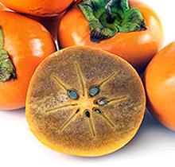

SAFARI
Users
Date Plum
 [Caucasian Persimmon, Lilac Persimmon; Dios Pyros (Greek);
Diospyros lotus]
[Caucasian Persimmon, Lilac Persimmon; Dios Pyros (Greek);
Diospyros lotus]
Native to Western Asia and Southern Europe, this is the persimmon known
to the ancient Greeks as "Fruit of the Gods". The English "Date Plum"
is a direct translation of the Persian name Khormaloo. This persimmon is
one of several items suspected of being the "Lotus" mentioned in the
Odyssey, so delicious its eaters would forget to go home. It is pretty
much unknown in the US where Asian and native persimmons dominate. The
fresh fruit is about 3/4 inch diameter and fairly tart, but after a frost
or when dried it is quite sweet.
Photo distributed under license Creative Commons
Attribution-ShareAlike v3.0.
Jackalberry
[African Ebony; Jakkalsbessie (Afrikaans); Diospyros mespiliformis]
Native to the savannas of Africa, the fruit of this tree grows to a
little over 1 inch in diameter and turns purple when ripe. It is much liked
by jackals and is a traditional food of the Bantu people. Described as having
a "lemon-like" flavor, jackalberries are often made into preserves. The wood
is highly resistant to termite damage, as one would be expect of a tree that
likes to grow on termite mounds.
Photo by Marco Schmidt distributed under license
Creative Commons
Attribution-ShareAlike v3.0.
Persimmon - American
[Eastern Persimmon, Common Persimmon, Diospyros virginiana]
Native to the Southeastern US this persimmon is small. The photo specimens
were up to 0.82 inches, but they can grow to about 1-1/2 inches diameter.
These are highly astringent when unripe but becomes sweet and tasty when
completely ripe. It is a very popular fruit and grown commercially in its
native region. Aside from eaten fresh it is used to make a kind of
molasses and fermented with hops and grain into a beer, which may be
further processed into brandy. It is not much exported from the region
and almost never appears here in California where Fuyus and Hachiya are
grown in quantity. I have no memory of where I got the photo specimens
back in 2009. The tree produces an excellent ebony wood, but not for
about 100 years.
Persimmon - Fuyu
[Japanese Persimmon; Fuyugaki, Fuyu, Kaki (Japan); Sharon Fruit (Israel - Israel trade name); Diospyros kaki var Fuyu]
Native to China, this persimmon was taken to Japan long ago, and brought to Southern California early in the 20th century. Produce markets here now display these in big bins when in season (October through December). They are firm, durable and easy to market, and can be eaten in that state because they're a non-astringent variety.
They are pleasant enough to eat as sold, crunchy and mildly sweet.
Unfortunately they'll never get a whole lot better (see Hachiya). Choose
fruit that is mostly yellow to orange with little green. They'll keep out
on the counter for as much as a couple of weeks.
Persimmon - Goma
 [Hyakume; Diospyros kaki]
This is a pollination-variant of non-astringent persimmons. When fully
pollinated the fruit is brown inside rather than orange, and it can be
eaten while still firm. Much prized in Japan, some are grown in California
but are not commercially available - only direct from the growers and at
farmer's markets in the growing area.
Photo from
Specialty Produce under "fair use doctrine".
Persimmon - Hachiya
[Japanese Persimmon; Kaki (Japan); Diospyros kaki var Hachiya]
Native to China and carried to Japan long ago, this was formerly the most common persimmon in Southern California markets. The Hachiya has recently been overtaken by the less sweet and less flavorful Fuyu due to ripening and handling considerations. When not completely ripe the Hachiya is very astringent - it'll pucker your lips and twist your tongue - and the time between unripe and over-ripe is very short. On the other hand, eating a perfectly ripened Hachiya is an experience as sensuous as eating something else, except it tastes better. No Fuyu can compete with this.
Hachiyas are in season from October into December. When selecting fruit choose those that are even in appearance and without bruises or soft spots. You will rarely find one perfectly ripe in the market but select for just a hint of give - not too hard. Set on the counter and check every day until they yield easily to light pressure but do not feel mushy. Enjoy.
In Japan, China, Korea, Vietnam and in small amounts in California, this
type of persimmon is dried using a traditional process. In Korea it is
fermented and made into a persimmon vinegar. In Taiwan astringent varieties
that aren't quite ripe are pickled in lime water to get rid of the astringency
and sold as "crisp persimmons".
Sapote Negro
 [Black Sapote, Black Persimmon, Chocolate pudding fruit; Zapote prieto
(Spanish); Diospyros digyna]
[Black Sapote, Black Persimmon, Chocolate pudding fruit; Zapote prieto
(Spanish); Diospyros digyna]
Native to eastern Mexico and Central America as far south as
Colombia, this tree is completely unrelated to the Sapote Blanko (White
Sapote) or the Mammey Sapote. The fruit pulp is often served mixed with
orange juice and honey and likened to a chocolate pudding.
Photo by Abalg distributed under license
Creative Commons
Attribution ShareAlike v3.0.